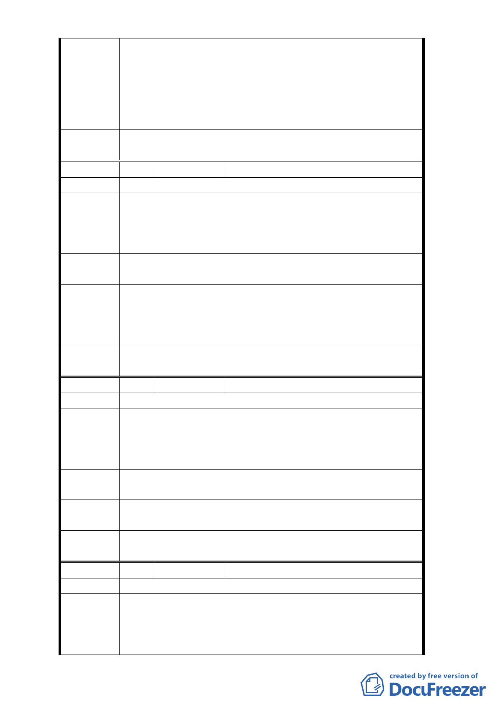

理 意 見 居住環境、促進地區發展，又基於京華城購物中心已開發
完成，囿於原整體開發規定而不允許所有權人申請都市更
新，顯有影響所有權人財產權之疑義，又該處遲未能順利
開發，建物老舊亦有妨害地區公共環境之情事，爰依都市
計畫法第27條第1項第3款研擬本都市計畫案解除整體開發
規定。
委
決
員
會
議
同編號1。
編 號4
陳情人 蔡○良、黃○鈞
陳情位置 松山區八德路四段 106 巷
威京公司違反市府當時都計變更整體開發之要求，自
陳情理由
行將本人土地劃出開發範圍，致本人房屋長久無法更動，
威京公司更對申請人提出民事訴訟，申請人無法信任威京
公司。
建議辦法
將申請人土地劃出原計畫範圍，不再列入開發範圍更
不接受分期開發。
本案考量居住環境改善、促進地區發展、提升整體都市環
擬建議處 境品質等因素，研擬解除都市計畫整體開發之規定。倘經
理 意 見 都委會審議通過，後續開發將不受原都市計畫整體開發之
規定。
委
決
員
會
議
同編號1。
編 號5
陳情人 黃○淳等 2 人、王○玲
陳情位置 松山區八德路四段 106 巷
威京公司違反市政府當時都計變更整體開發之要求
陳情理由
，自行將本人土地劃出開發範圍，致本人房屋 30 餘年無
法更動，威京公司更對申請人提出民事訴訟，申請人無法
信任威京公司，不願與之為伍。
建議辦法
將申請人土地劃出原計畫範圍，不再列入開發範圍更
不接受分期開發。
擬建議處
理意見
同編號4回覆內容。
委
決
員
會
議
同編號1。
編 號6
陳情人 陳○樺（委託李○廉）
陳情位置 松山區西松段三小段 162-2、162-3、175、176、179 等地號
1. 陳情人陳鳳樺等所有之松山區西松段三小段 176 地號等
陳情理由
五筆土地，座落於『修訂台北市土地使用分區（保護區
、農業區除外）計畫（通盤檢討）案內有關八德路四段
、東寧路、縱貫鐵路、八德路四段 106 巷所圍地區（原
- 58 -